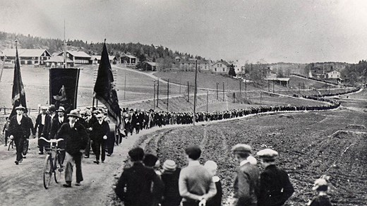
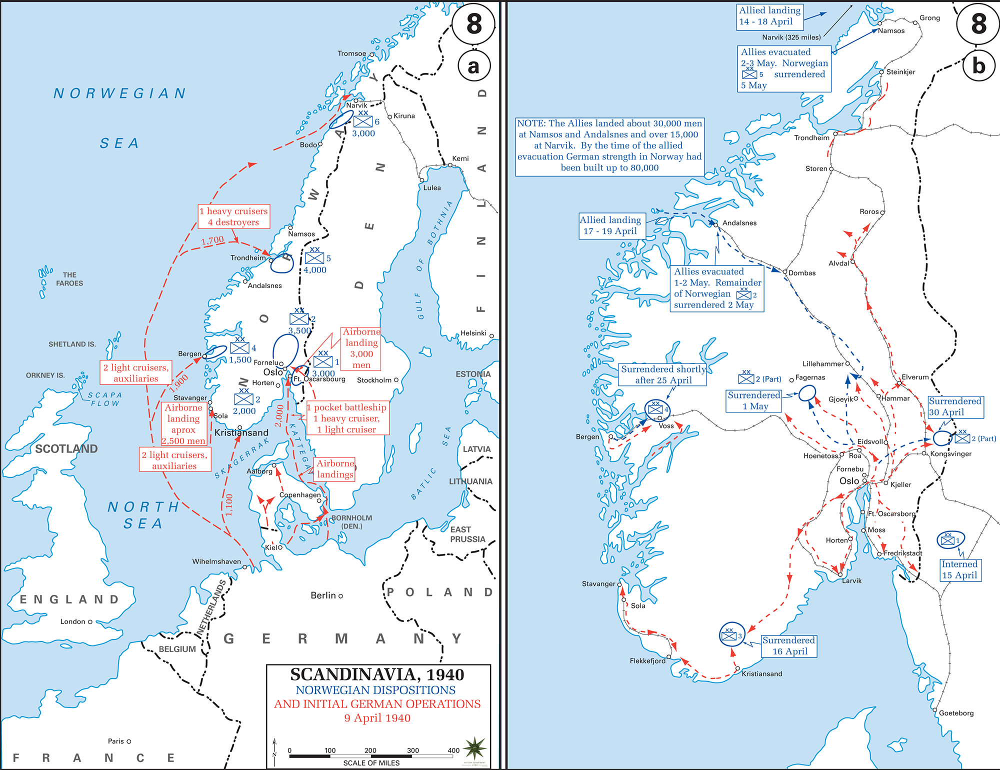
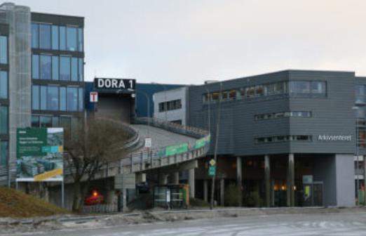

Jerry Lin
Assignment 1: Class Host
2026/10/19
History of Interiors and Furniture
Social Democratic movements gain influence and adopt a reform path after the failure of the revolution path
Scandinavia abandoned the Gold Standard, devaluing their current to boost exports
Scandinavia declared neutrality
German invaded Denmark and Norway
British military occurpied Iceland
German implenmet Scorched earth tactics, destory Norway's infrastrction
Sweden established social welfare system. Norway and Denmark were reconstructing their home

In 1939, Scandinavian countries declared neutral, but German occupy Norway and Denmark in 1940. To avoid military conflicts, Sweden repeatedly compromised to allow German troops to pass through its land. The government of Denmark was exiled to Britain.
Iceland, which had belonged to Denmark, was occupied by Britain. In 1944, Iceland became an independent republic through a public vote
Despite Norway and Denmark being occupied, the society still organized a small resistance movement. For instance, Denmark helped Jews hide in 1943
Norway focused on physical reconstruction after World War II. The country reused some of the infrastructure left behind by German troops to support rebuilding efforts. For instance, they converted a submarine base into shopping malls (Haugan,2023).
Sweden continued to establish its welfare state. introduced a universal social welfare system, including free healthcare, family support, and pensions. Due to the stable trading conditions, the economy recovered quickly (Sandvik, 2025).
Denmark was solving security problems. They recognized Iceland's independence, expelled the stationed Soviet troops, and joined NATO in 1949.


Aarhus University.(n.d.). The Danish realm and its population after 1945. https://cas.au.dk/en/danish-history/modules/module-8-the-post-war-era-1945-1973/1-the-danish-realm-and-its-population-after-1945
Enander, H. (n.d.). Cultural institutions. Encyclopaedia Britannica. https://www.britannica.com/place/Norway/Cultural-institutions
Glückstadt, E., Green, H., Stauning, T., Bang, N., & Steincke, K. K. (n.d.). Deflation, the Landmandsbank crash and the first Social Democratic government, 1920–1929. Denmark: From the Ice to the Welfare State. https://www.cdan.dk/danish_history/39-deflation-the-landmandsbank-crash-and-the-first-social-democratic-government.html
Haugan, I. (2023, March 15). Norway got back on its feet quickly after the war. Norwegian SciTech News. https://norwegianscitechnews.com/2023/03/norway-got-back-on-its-feet-quickly-after-the-war/
HistoryMaps. (n.d.). Folkhemmet: Social welfare in Sweden. https://history-maps.com/story/History-of-Sweden/event/Folkhemmet-Social-Welfare-in-Sweden
Jonung, L. (1981). The depression in Sweden and the United States: A comparison of causes and policies. In K. Brunner (Ed.), The Great Depression revisited (pp. 286–315). Martinus Nijhoff Publishing. https://lucris.lub.lu.se/ws/portalfiles/portal/68599436/52_Jonung_The_Depression_in_Sweden_and_the_United_States_A_Comparision_of_Causes_and_Effects_1981.pdf
Lakey, G. (2012, January 25). How Swedes and Norwegians broke the power of the ‘1 percent’. Waging Nonviolence. https://wagingnonviolence.org/2012/01/how-swedes-and-norwegians-broke-the-power-of-the-1-percent/
Linton, M. I. A. (n.d.). The 20th century. Encyclopaedia Britannica. https://www.britannica.com/place/Denmark/The-20th-centuryMap of WWII - Scandinavia 1940. (n.d.). Emerson Kent. https://www.emersonkent.com/map_archive/scandinavia_1940.htm
Sandvik, G., Larson, S.R., Norman, L.T., Enander, H., Weibull, J. (2025, January 16). history of Sweden. Encyclopedia Britannica. https://www.britannica.com/topic/history-of-Sweden
Stalsberg, L. (n.d.). The academic discipline post-war Norway needed. University of Oslo. https://www.muv.uio.no/english/history-uio/The%20academic%20discipline-post-war-norway-needed.htmlThörnqvist, C. (2009). The Nordic labour market model. Nordic Historical Review, 9(1), 113–139. https://doi.org/10.3917/rhn.009.0113
Türegün, A. (2017). Revisiting Sweden's response to the Great Depression of the 1930s: Economic policy in a regional context. Scandinavian Economic History Review, 65(2), 127–148. https://doi.org/10.1080/03585522.2017.1286258
Tvedt, K. A. (2026, September 1). Norges historie fra 1905 til 1939. Store norske leksikon. https://snl.no/Norges_historie_fra_1905_til_1939
Why did Denmark allow Iceland to gain full independence after the end of World War II?
Although the Scandinavian countries adopted different political approaches, why are they often grouped together under the term "the Nordic model"? To what extent does a distinct Nordic model actually exist?
What role did World War II play in shaping Scandinavian history? Would these nations have followed a different path if the war had never occurred?